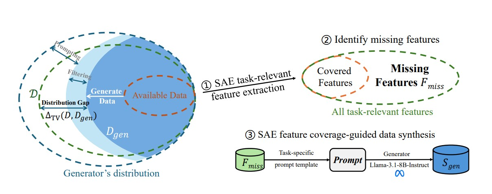
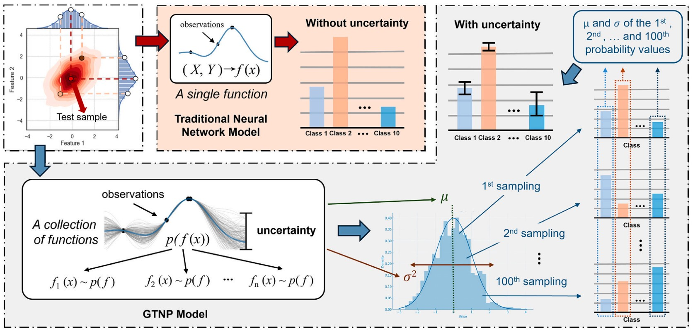
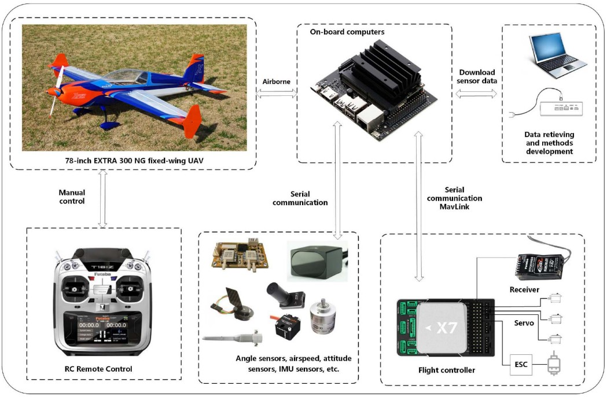

Zhongzhi Li (李忠智)
I am currently a first-year Ph.D. student in the School of Computing at the University of Georgia, advised by Dr. Ninghao Liu. I received my M.S. from the School of Intelligent Robotics and Advanced Manufacturing Innovation at Fudan University. I am interested in improving the interpretability, controllability, and trustworthiness of AI systems, with a particular focus on foundation models and safety-critical applications.
|
 |
Less is Enough: Synthesizing Diverse Data in Feature Space of LLMs Zhongzhi Li*, Xuansheng Wu*, Yijiang Li, Lijie Hu, Ninghao Liu. project page / arXiv / code We introduce Feature Activation Coverage (FAC) and a diversity-driven data synthesis framework that improves data diversity and downstream performance on instruction following, toxicity detection, reward modeling, and behavior steering. |
|
 |
Zhongzhi Li, Jingqi Tu, Jiachen Zhu, et al. Neurocomputing, 2025. |
|
 |
A lightweight and explainable data-driven scheme for fault detection of aerospace sensors Zhongzhi Li, Yiming Zhang, Jianliang Ai, et al. IEEE Transactions on Aerospace and Electronic Systems, 2023. |
Postgraduate period. Received 6 scholarships.
Undergraduate period. Received 12 scholarships.
Reviewer for IEEE Transactions on Artificial Intelligence, IEEE Transactions on Industrial Informatics, IEEE Internet of Things Journal, AAAI, and other conferences.